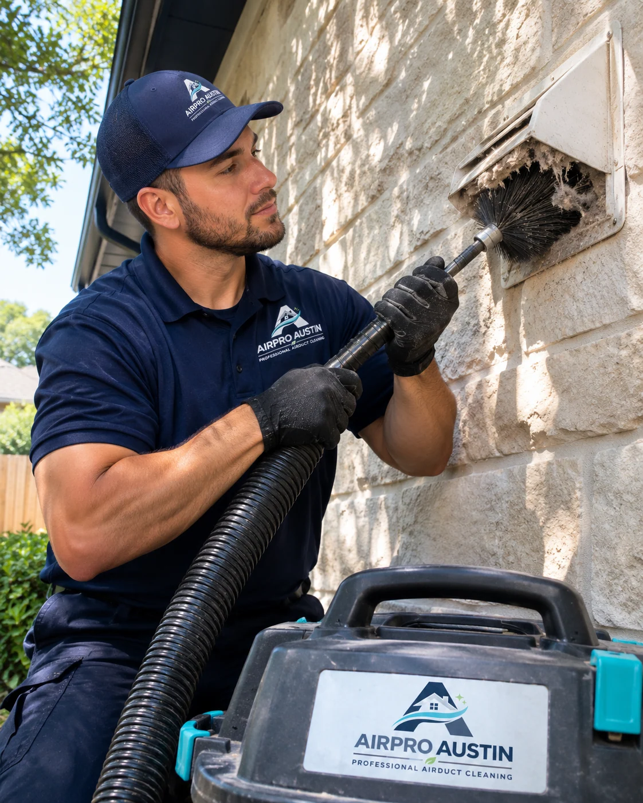
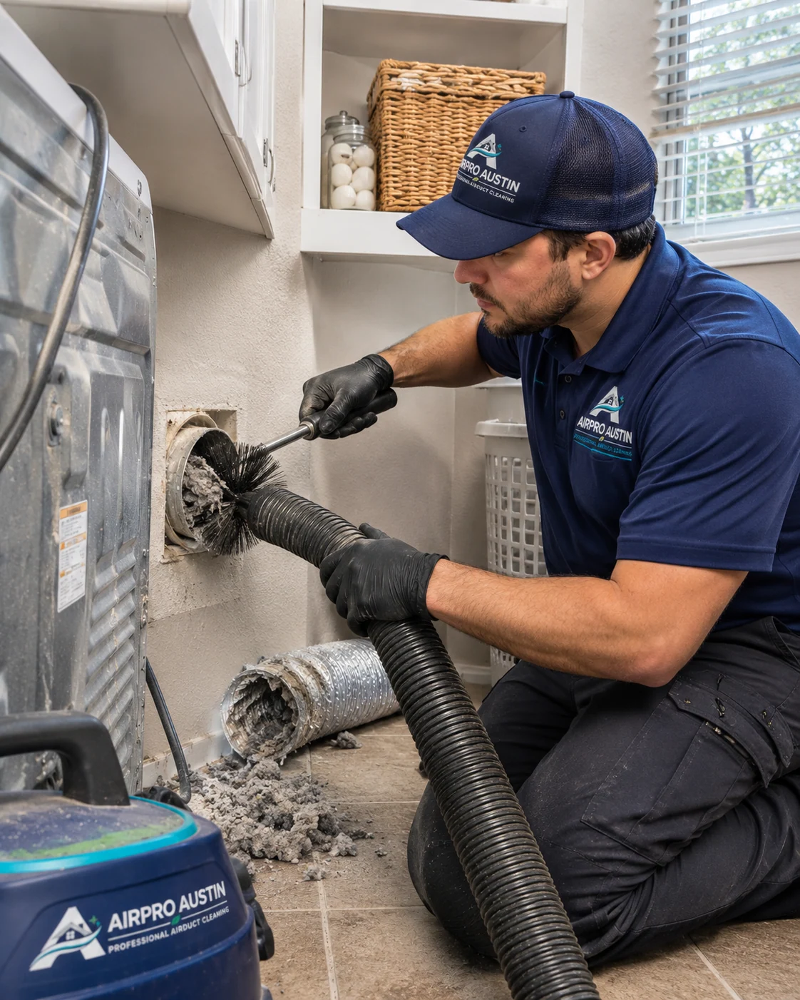
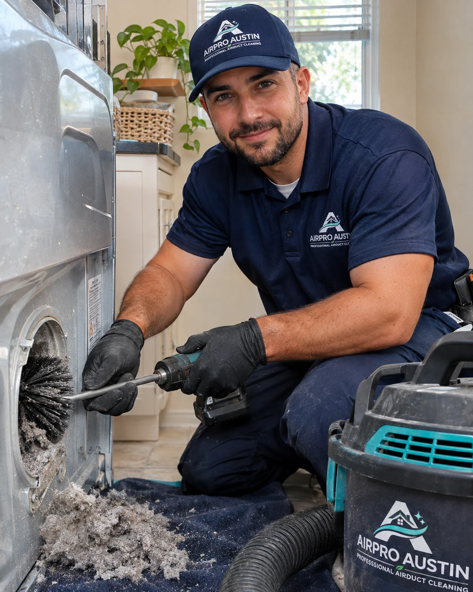
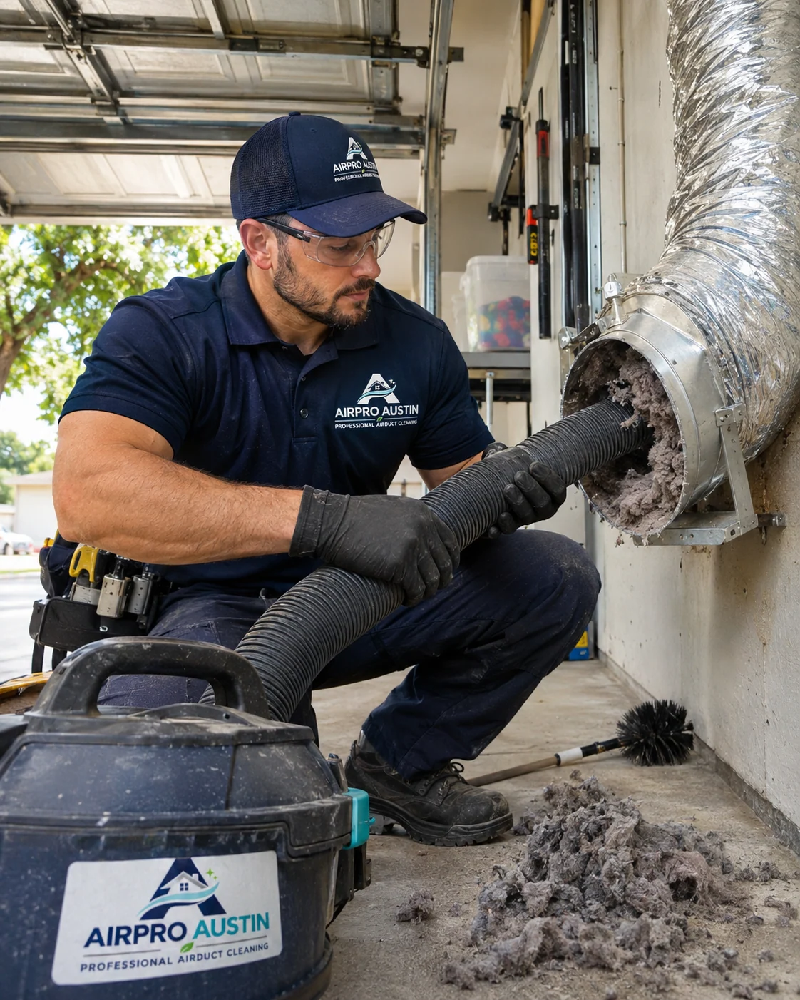
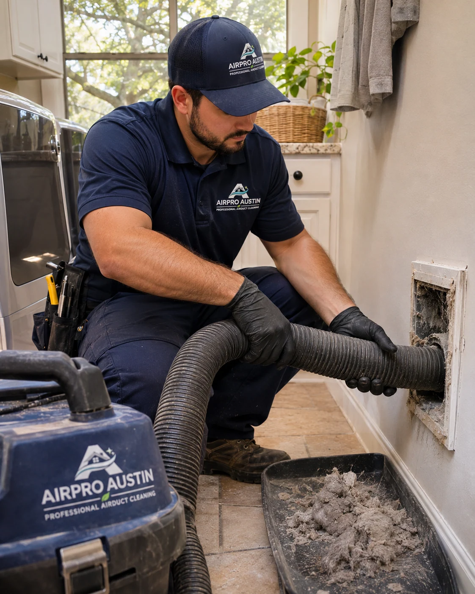

Clothes Need More Than One Cycle
Restricted exhaust airflow may leave clothes damp after a normal drying cycle.
Clothes Taking Longer to Dry?
Lint buildup may be restricting airflow in your dryer vent. AirPro Austin checks the vent path, removes accumulated lint, and reviews the exhaust airflow.
Warning Signs
These changes can point to a venting problem. The dryer itself may also need attention.
Restricted exhaust airflow may leave clothes damp after a normal drying cycle.
Excess heat can point to poor ventilation or a problem with the dryer itself.
Visible lint around the outlet is a reason to check the vent and exhaust opening.
The vent may have trouble carrying warm, moist air outside.
See What Our Google Customers Are Saying

“They were available same day. Seemed to do a very detailed cleaning. Very nice & easy to work with.”
“Roy was thorough and explained my options. He was very understanding and worked with me to get the job done. My vents are clean and it’s was an easy process.”
“AirPro Austin is very efficient and knows what they’re doing!”
“Roi made a special trip at the last minute at the end of the day, very professional. Thank you!”
“Roy knew exactly what to do”
“Great work. Prompt arrival, diagnosed the problem and fixed it same day. Would recommend for future work.”
What to Expect
Roof access, longer vent runs, repairs, and rerouting may require separate pricing.

Review the vent layout and accessible areas, then explain the cleaning scope.
Remove lint and debris using equipment suited to the vent.
Check airflow and explain any remaining concerns or work that needs a separate quote.
Review the basic cleaning offer and what may change the final quote.
Basic cleaning
$99
Basic cleaning for a standard dryer vent run, with an airflow inspection.
Book Dryer Vent CleaningLonger runs, roof access, repairs, and other additional work are quoted separately.
Basic bundle
$298
Combine basic air duct cleaning and standard dryer vent cleaning in one service request.
Book Both ServicesEach service’s eligibility and scope apply. Additional work is quoted separately.
★★★★★
“Air ducts seem clean and I really like the UV light installed.”
★★★★★
“Roi was very friendly and did an excellent job at explaining the details of the job. Well done!”
★★★★★
“Roi and Eric worked efficiently and effectively to solve our issue. New filters and uv lights. Recommend them anytime.”
★★★★★
“Top-shelf customer support, timing, problem solving, and responsiveness.”
★★★★★
“Roi was great to work with. He explained what needed cleaning and showed us what was inside the vents. Really happy with how everything turned out.”
★★★★★
“Our dryer was taking two cycles to finish a load. They cleaned out a lot of lint, and it's been working much better since. Glad we called.”
★★★★★
“We had a lot of dust left over from remodeling. Roi and his team were careful around the house and showed us photos of the ducts. Good experience overall.”
★★★★★
“First time having our chimney cleaned in a while. The guys explained everything before starting and cleaned up after themselves. Would use them again.”
★★★★★
“Easy to schedule and they showed up when expected. Roi was friendly, answered my questions, and got the dryer vent cleaned without any issues.”
★★★★★
“Had a UV light installed in our AC system. They walked me through how it works and what maintenance it needs. Appreciate them taking the time to explain it.”
★★★★★
“Very professional from start to finish. They protected the area around our fireplace and didn't leave a mess behind. The whole appointment went smoothly.”
★★★★★
“Our gutters were packed with leaves. They cleared everything out and pointed out a section we should keep an eye on. Straightforward service.”
★★★★★
“Roi was very helpful and didn't rush through the appointment. He explained why the vent was getting clogged and answered all my questions. I'd definitely call again.”
★★★★★
“Good communication and easy scheduling. The crew showed us what they found in the ducts and explained the work before doing anything extra. No complaints.”
Assessment and Service Work
See where lint collects, how technicians reach the vent, and what an exhaust check involves. The service illustrations show examples of each step.

A standard cleaning covers the agreed vent run. If the vent exits through the roof or runs a long way from the dryer to the outside, we’ll check how we can reach it and explain any extra work before you decide.
If a vent section is crushed, damaged, or disconnected, cleaning alone may leave the problem in place. We’ll show you what we find and explain whether a section needs repair or replacement. If the vent route itself is restricting airflow, we can discuss rerouting and quote it separately.



FIND YOUR SERVICE
Not sure what you need? Start with what you’ve noticed.
AIR DUCT CLEANING
Dust and debris can collect inside ductwork over time. We remove accessible buildup and address cleaning needs identified during an inspection.
Explore Air Duct CleaningDRYER VENT CLEANING
Lint buildup can restrict airflow in your dryer vent. We remove accumulated lint from the vent line and check for airflow problems.
Book Dryer Vent CleaningCHIMNEY CLEANING
Soot, creosote and debris can build up inside chimneys. Our cleaning service removes deposits and helps identify concerns that need further inspection.
Explore Chimney CleaningHVAC UV LIGHT
Explore UV light options for compatible HVAC systems.
Explore HVAC UV LightHVAC DISINFECTION
Learn about available disinfection treatments and how they differ from routine duct cleaning.
Explore HVAC DisinfectionGUTTER SERVICES
Explore gutter cleaning, repair, and installation options for your home.
Explore Gutter Services★★★★★
“Roi did an amazing job with my vent cleaning. He took time to explain how everything worked and did incredible work. I will use him for every yearly cleaning from here on out. 10/10 experience!!!”
★★★★★
“Roi was amazing - went above and beyond to clean a very challenging duct. Cleaned up afterward. So glad I used Airpro Austin. Highly recommend!”
★★★★★
“Roy is amazing! Knowledgeable, professional and an expert in his field. He explained every step along the way...even drew sketches of the process to clean our air ducts and all the vents. Plus, a very nice man who strives to do a great job.”
★★★★★
“Roi showed up the next day and inspected and gave us a quote. When we accepted the quote he showed up the next day to begin work.”
★★★★★
“He shared options and pricing quickly with me and was flexible to the fact that I was in between meetings while he worked.”
★★★★★
“They did a great job! Very responsive.”
★★★★★
“Roy was great and thorough. Identified the exact problem and gave me a quick estimate on time and cost. Was in and out quickly”
★★★★★
“Roy did a great job in helping with our duct cleaning. He provided detailed estimates and provided the service that is only required.”
★★★★★
“They responded right away and were able to take care of the dryer vent cleaning immediately. Will recommend for future services.”
★★★★★
“Cleaned out clogged dryer vent and reconnected it. Showed up on time and did what was needed to fix the issues shown in the photos below. Would hire again.”
LOCAL TO YOUR HOME
AirPro Austin serves these Austin-area communities. Call to confirm availability at your address.
Before you book
Our advertised basic dryer vent cleaning price is $99 for an eligible standard vent run. Longer or roof runs, repairs, and additional work are quoted separately. Contact us to confirm the price and scope for your installation. airpro-austin.com
Restricted airflow may be contributing, but load size, cycle settings, and appliance problems can also affect drying. Cleaning is not a guaranteed fix for every cause. Whirlpool’s drying-performance guidance explains several possibilities.
Annual vent cleaning is a common safety recommendation, with earlier attention when drying takes longer than normal. Follow your dryer’s instructions and consider its usage and vent condition. See the Fairfax County Fire and Rescue dryer-safety guidance.
No. The lint filter and the exhaust vent both need attention. Cleaning the filter after each load does not replace checking the vent for restrictions. Fire and Rescue’s dryer-safety tips address both tasks.
Yes. Cleaning removes buildup, but it does not correct every damaged section or unsuitable vent layout. The Building America guide to proper dryer venting explains why materials, routing, and the exterior outlet matter.
AirPro Austin’s published estimate is about one hour for many residential appointments. Longer runs, heavy buildup, or repairs can add time. Ask our team about the expected appointment length for your vent. AirPro Austin
Yes. AirPro Austin lists roof-vent cleaning among its services. Roof access and the vent configuration may affect the quote, so mention a roof termination when you request service. AirPro Austin
Repairs and rerouting are separate from the basic cleaning offer. Ask for a breakdown of any recommended work before approving it. AirPro’s published services include vent repair and rerouting; contact us to discuss the problem. AirPro Austin
Yes. The advertised combined basic-cleaning offer is $298. Explore our Air Duct Cleaning service and confirm that both services can be scheduled together for your home. airpro-austin.com
Request an appointment through our Contact Us page or call (512) 677-1878. Tell us about slow drying, access concerns, or a roof vent. Our Privacy Policy explains how your information is handled.
Contact Us
Tell us what you have noticed and request a service visit. Call with questions about roof access, longer vent runs, or possible repairs.
GET A FAST QUOTE 100% FREE
Demo form. Use sample details to preview the appointment request.